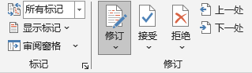

开启"所有标记"
显示标记
“审阅” 选项卡 → “修订”分组 → “修订”按钮
当按钮背景变为灰色或高亮显示时，即表示已开启
再次单击，将关闭修订
新增内容：通常显示为带下划线的文字
删除内容：通常显示为带删除线的文字，或以气泡形式出现在页面侧边的批注框中
格式调整：也会根据设置被记录下来
当你完成审阅，或希望后续的修改不再被记录时，再次点击 “审阅” 选项卡下的 “修订” 按钮，即可将其关闭
逐条处理：在“审阅”选项卡下，使用 “接受” 或 “拒绝” 按钮，可以逐条确认或撤销修改
批量处理：点击“接受”或“拒绝”按钮下方的下拉箭头，可选择“接受所有更改”或“拒绝所有更改”，一键完成文档定稿